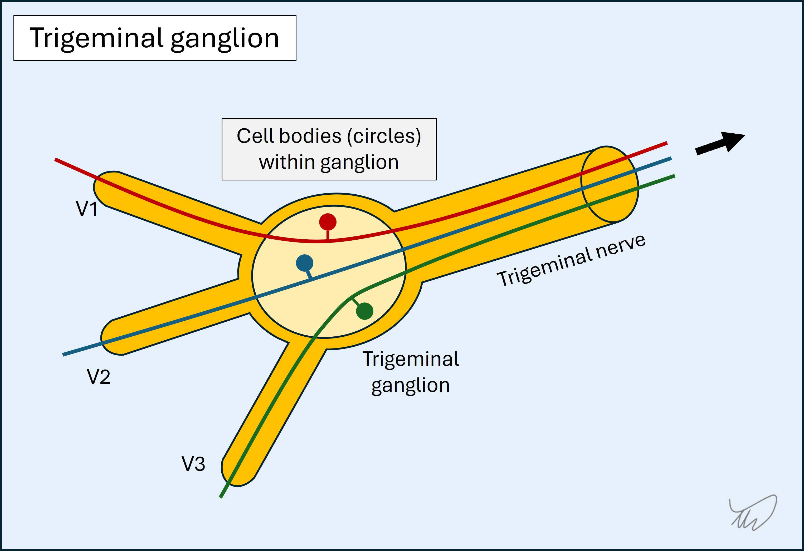
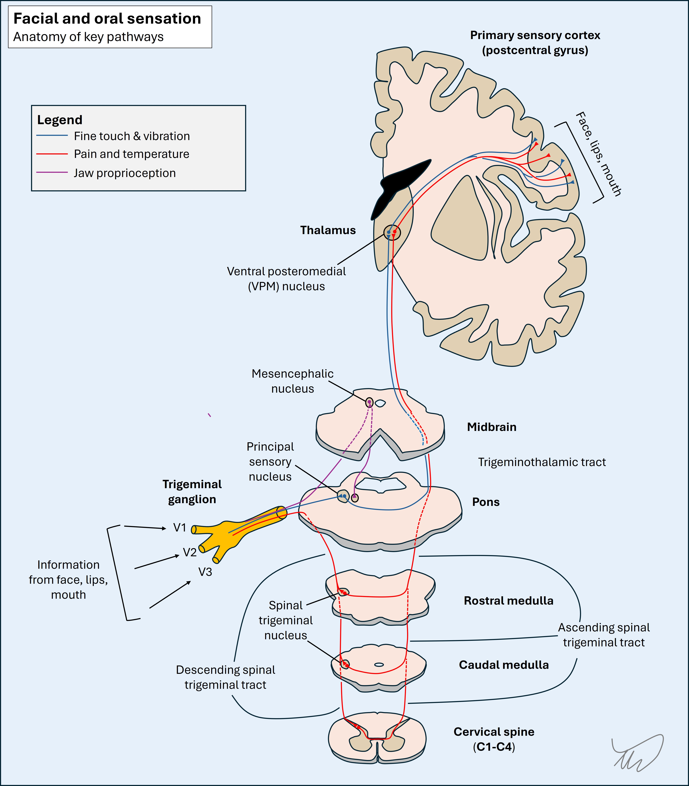

Case 3. Numb face
Where is the lesion?
This patient has sensory disturbance – reduced touch and absent pinprick – affecting the left face and internal oral cavity. There is no sensory loss in other regions, importantly including the neck and occiput, where sensation is provided by cervical dermatomes. She has no other cranial nerve problems.
This indicates a problem with the sensory fibres from all three branches of the trigeminal nerve, anywhere between their meeting point in the trigeminal ganglion and their ultimate destination in the brain.
Hemifacial sensory disturbance is a very common neurological presentation and to approach this, every neurologist should understand the key anatomy. After that, we can think about this patient's lesion.
Anatomy of facial and oral sensationThe sensory pathway begins peripherally; small nerves innervate various parts of the face or oral cavity, and these travel proximally. The various nerves unify and form each of the three branches, and each of these enters the cranial cavity through one of the skull foramina; the superior orbital foramen (V1), foramen rotundum (V2) and foramen ovale (V3).
Cavernous sinusV1 and V2 travel backwards through the lateral wall of the cavernous sinus, a venous blood filled compartment which also contains the nerves involved in eye movements (III, V and VI), part of the carotid artery, and some sympathetic nerves.

Trigeminal ganglion & Meckel's cave
V1 and V2 then leave the lateral wall of the cavernous sinus; the wall is formed from the meningeal (inner) layer of dura.
They meet V3 outside of the cavernous sinus and unify at the trigeminal (i.e Gasserian or semilunar) ganglion. The ganglion is housed within Meckel's cave, a 'pouch' or 'pocket' formed by the meningeal layer of the dura, with the arachnoid matter lining it - so at this point V1-3 and then the ganglion are within the subarachnoid space within Meckel's cave, and bathed in CSF.
The trigeminal ganglion is near the temporal bone apex (above the ‘trigeminal impression’), within Meckel’s cave - a ‘pocket’ or 'pouch' formed by the meningeal layer of the dura. The ganglion sits in the subarachnoid space, surrounded by CSF, and is where the cell bodies are housed. The neurons are pseudo-unipolar, akin to the sensory neurons from the limbs (whose cell bodies lie in the dorsal root ganglia). This isn't a synapse - it's just a point where the cell bodies are.
Trigeminal nerve
The unified trigeminal nerve (V) travels back to the brainstem, and enters in the upper, lateral pons, in the trigeminal nerve entry zone.
Brief mention of the motor (efferent) componentWe are reviewing the sensory paths, but the trigeminal’s other function is motor – for mastication (chewing). It is worth mentioning the peripheral anatomy.
The efferent motor fibres do not travel in the main nerve – there is a separate motor root, and a nerve. This nerve eventually bypasses the ganglion and then joins V3 distal to the ganglion. From there the motor fibres travel to their target muscles, including temporalis, masseter and pterygoids, which receive their own supplying nerves. Even though we check it in the 'standard' cranial nerve examination sequence, it's quite unusual for the jaw muscles to become weak in trigeminal disorders. Brainstem: the trigeminal nuclei and pathwaysThis is not simple. There are four trigeminal nuclei in the brainstem where the fibres synapse. These nuclei are not localised to one level or point – some are in the pons, but some are in the midbrain, and one spans longitudinally from the upper medulla to the upper cervical spine. Three nuclei are involved in sensation, and the fourth is for motor efferent output.
1. Principal sensory nucleus
The principal sensory nucleus (or chief/main sensory nucleus) in the upper, dorsal, lateral pons receives sensory information regarding light touch and pressure from the face and oral cavity. This has somatotopic organisation; oral cavity information synapses to a dorsomedial part of the nucleus while information from the remaining areas synapse in the ventrolateral part.
The second order neuron then crosses immediately and ascends toward the thalamus as the trigeminothalamic tract (i.e. trigeminal lemniscus ).
2. Spinal trigeminal nucleusThe spinal trigeminal nucleus (or spinal sensory nucleus of trigeminal nerve) is a long nucleus which descends from the upper lateral medulla down to the upper cervical spinal cord. It concerns pain and temperature modalities, analogous to the spinothalamic tract.
The nucleus has descending fibres termed the descending spinal trigeminal tract . Fibres synapse at various levels, as low as C4. After this the second order neuron decussates and travels up in the contralateral spine and medulla as the ascending spinal trigeminal tract . At the pons this joins the trigeminothalamic tract.
Mesencephalic nucleusThe mesencephalic nucleus in the midbrain (‘mesencephalon’ means midbrain) receives proprioceptive information from the jaw.
Motor nucleusUpper motor neuron (UMN) fibres (corticobulbar tract) to the jaw come from the lateral motor cortex. There is bilateral cortical input (similar to the forehead, orbicularis oculi, and tongue) – each hemisphere projects corticobulbar fibres to the ipsilateral and contralateral pons. These fibres synapse in the motor nucleus in the upper, lateral pons. This then sends efferent signals (lower motor neurons, LMNs) for mastication outward via the motor root as above, eventually joining V3.
The consequence of the bilateral UMN input is similar to the facial and hypoglossal nerves: unilateral central lesions (e.g. stroke or tumour) don’t cause significant jaw weakness, whereas nuclear or peripheral (LMN) lesions can weak the ipsilateral jaw – although they often don't, and trigeminal motor neuropathy is quite uncommon.
Sensory information ascends as the trigeminothalamic tract, contralateral to the side of the face concerned, close to the spinothalamic and medial lemniscus tracts, carrying sensory information from the body.
Ascending sensory information: brainstem to thalamus and then cortexSensory information ascends as the trigeminothalamic tract, contralateral to the side of the face concerned, close to the spinothalamic and medial lemniscus tracts, carrying sensory information from the body.
The trigeminothalamic fibres synapse in the ventral posteromedial nucleus (VPM) in the thalamus.
From there the third order thalamocortical fibres travel from the thalamus via the internal capsule as the thalamic radiations, and then ascend to the sensory cortex (lateral post-central gyrus).
Applying it to this patient's lesionWe can now consider lesion sites and work from periphery to brain to localise this patient’s lesion. The key will be considering the extent of the numbness and the lack of other features.
PeripheryAll three branches are involved, so the most distal point this lesion could be is the ganglion. Lesions here exist (ganglionopathy), and cause hemifacial sensory loss. Trigeminal ganglionopathy can arise in isolation or be accompanied by similar patchy numbness in the body, as well as proprioceptive loss (which this patient does not have) - due to a widespread, usually autoimmune or paraneoplastic process.
A lesion of the trigeminal nerve (trigeminal neuropathy) can also numb the ipsilateral face.
Ganglionopathy and trigeminal neuropathy are possible here.
Root entry zoneA lesion at the root entry zone can sometimes cause facial numbness (e.g. a tumour such as trigeminal schwannoma). This is possible for this patient.
Likewise a lesion in the cerebellopontine angle (CPA) can enlarge and compress the nerve from below. This may also affect VII (causing facial palsy), and/or VIII, causing unilateral sensorineural hearing loss, tinnitus and vestibular dysfunction. The main cause is a vestibular schwannoma. This patient lacks other features of a CPA lesion however so this is less likely.
BrainstemBrainstem lesions certainly produce hemifacial sensory disturbance. The brainstem is a 'busy area' with lots of nuclei and tracts, so lesions often produce multiple deficits.
The best way to identify and localise brainstem lesions is to look for deficits in either of the following:
These not only suggest a brainstem problem – they allow localisation. The principles of this are outlined in the Approach section - see Where? - but in this case, the trigeminal principal sensory nucleus is in the upper pons, sited laterally, and nearby structures that might become affected include the spinothalamic and sympathetic tracts, and the middle cerebellar peduncle.
However, this seems to be a ‘pure’ trigeminal sensory problem, with no particular markers giving us confidence this is a brainstem lesion. It still could be - we just don't have any strong proof that it is.
It is also less likely to be a lesion higher in the brainstem, as at this points the ascending fibres also travel with sensory fibres from the body on their way to the thalamus.
Thalamus, ascending tracts and cortexA lesion affecting the VPM in isolation is not impossible - but this would be tiny and it would be unusual to spare the VPL (and hence limbs) or any of the other elements in this tightly-packed structure. A more typical pattern for a thalamic lesion disrupting sensation would be hemibody anaesthesia, head to toes including torso.
This is also true of the ascending thalamocortical fibres, with facial/oral fibres bunched alongside those carrying limb sensations - although as these travel higher and near the cortex, a subcortical lesion could potentially numb the face in isolation. This is uncommon however.
Quite a large zone of the sensory cortex concerns the face and oral cavity, so a fairly large cortical lesion would be necessary to produce this patient’s symptoms, which seems less likely.
SummaryThis patient’s sensory loss could reflect trigeminal gangliopathy, trigeminal neuropathy, or a lesion in the pons. It’s less likely to be higher than the pons given the sparing of other adjacent structures. A subcortical lesion is possible but a cortical lesion is not likely.
What is the lesion?